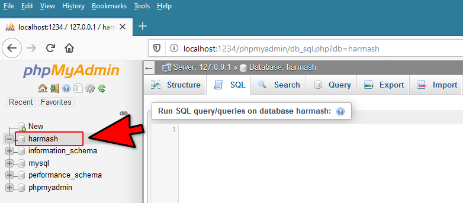
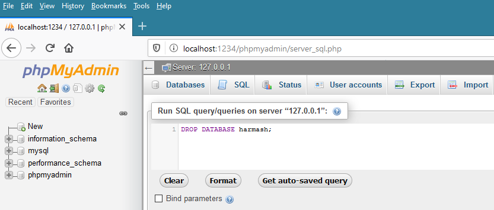
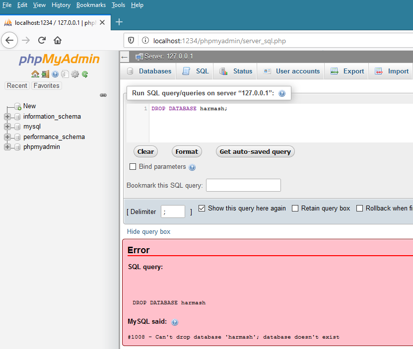
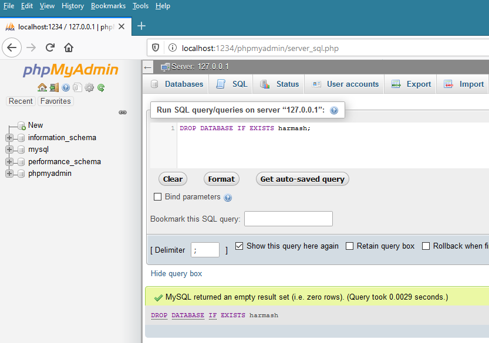

SQLأمر حذف قاعدة بيانات
الأمر DROP DATABASE
الأمر DROP DATABASE يستخدم لحذف قاعدة البيانات بشكل نهائي.
عند حذف قاعدة بيانات, لا يمكن العودة و التراجع عن هذه الخطوة لذا كن حذر جداً عند استخدام هذا الأمر.
الشكل العام لإستخدامه
DROP DATABASE db_name;
مكان الكلمة db_name نضع إسم قاعدة البيانات التي نريد حذفها.
حذف قاعدة البيانات
في البداية, تذكر أننا في الدرس السابق قمنا بإنشاء قاعدة بيانات إسمها harmash كما يظهر في الصورة التالية.

الإستعلام التالي يحذف قاعدة البيانات harmash.
ملاحظة: لا داعي لأن تقوم بتحديد قاعدة البيانات التي تنوي حذفها قبل تنفيذ هذا الأمر لأنك في الأساس تنوي حذف قاعدة البيانات و ليس التعامل معها أو التعديل عليها.
الإستعلام
DROP DATABASE harmash;
بعد تنفيذ الإستعلام السابق في phpMyAdmin سيتم حذف قاعدة البيانات harmash و ستختفي من القائمة اليسرى التي تظهر فيها جميع قواعد البيانات كالتالي.

محاولة حذف قاعدة بيانات غير موجودة أصلاً
في حال حاولت حذف قاعدة بيانات و لم تكن قاعدة البيانات موجودة أصلاً أو أن أنك قمت بمسحها سابقاً و نسيت أنك فعلت ذلك, سيظهر لك الخطأ التالي عند تنفيذ الإستعلام.
Can't drop database 'db_name'; database doesn't exist
قم بمحاولة إعادة حذف قاعدة البيانات السابقة, أي قم بإعادة تنفيذ الإستعلام التالي.
الإستعلام
DROP DATABASE harmash;
بعد تنفيذ الإستعلام السابق في phpMyAdmin سيظهر لك خطأ كالتالي.
هذا الخطأ يعني أنه لا يمكنك حذف قاعدة بيانات إسمها harmash لأنه لا يوجد في الأصل قاعدة بيانات إسمها harmash.

طريقة التأكد من أن قاعدة البيانات المراد حذفها موجودة في الأساس
إذا أردت حذف قاعدة بيانات فقط في حال كانت موجودة و تجنب ظهور الخطأ can't drop database; database exists يمكنك إضافة جملة IF EXIST قبل إسم قاعدة البيانات التي تريد حذفها كالتالي.
DROP DATABASE IF EXISTS db_name;
الإستعلام التالي يحذف قاعدة بيانات إسمها harmash في حال كان هناك قاعدة بيانات أصلاً بهذا الإسم.
الإستعلام
DROP DATABASE IF EXISTS harmash;
بما أننا قمنا سابقاً بحذف قاعدة البيانات harmash, فالبمنطق لا يمكن حذفها من جديد لأنها أصلاً لم تعد موجودة.
بعد تنفيذ الإستعلام السابق في phpMyAdmin سيتم تجاهل تنفيذ أمر حذف قاعدة البيانات و لن يظهر أي خطأ في نتيجة الإستعلام كما حدث سابقاً.

الطريقة الأفضل لحذف قاعدة بيانات
دائماً أكتب الأمر DROP DATABASE IF EXISTS عند محاولة حذف قاعدة بيانات حتى تتجنب ظهور أي خطأ في الإستعلام.
أي أخطاء تتوقع حدوثها عند محاولة تنفيذ الإستعلامات, حاول تجنبها حتى و إن تطلب منك ذلك عملاً إضافياً لأنك في النهاية ستكتب الأوامر بشكل إحترافي و آمن.
تطبيق كل الأوامر السابقة في تمرين واحد
حتى الآن أنت تعلمت كيف تنشئ قاعدة بيانات جديدة و كيف تحذف قاعدة بيانات موجودة.
المطلوب
الآن, أكتب إستعلام يقوم بإنشاء قاعدة بيانات إسمها training ثم قم بتنفيذه حتى تتأكد أنه تم إنشاء قاعدة البيانات بنجاح.
بعدها أكتب إستعلام يقوم بحذف قاعدة البيانات training و تأكد أنه قد تم حذفها بنجاح و لم تعد تظهر مع قواعد البيانات الأخرى.
من فضلك لا تنتقل لدرس جديد قبل إنهاء هذا التمرين بنجاح, و في حال لم تعرف كيف تحل التمرين, قم بمراجعة الدروس السابقة.

 محرر الويب
محرر الويب نظام الألوان
نظام الألوان محول الوحدات
محول الوحدات محلل عناوين الشبكات
محلل عناوين الشبكات